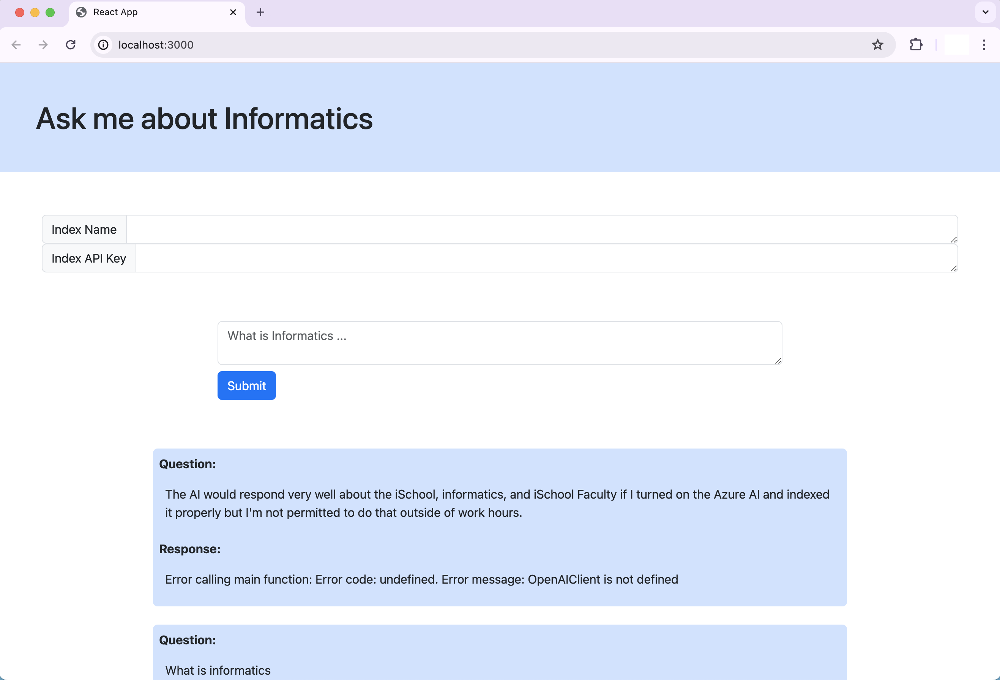

Interesting Projects
These are some of the professional, personal, and academic projects I have completed in the IT field. I am extremely grateful for the opportunities I have had to try new things and learn new skills and this portfolio showcases some of my most fuffilling work. Please, feel free to ask me about any of these projects, I would love to tell you more about my thought process, the development, or what I learned from it.
Blacklight Archiver was my recently completed capstone: a significant data engineering and software development project for The Markup, a non-profit newsroom. The Blacklight Archiver builds on the functionality of The Markup's cybersecurity tool which scans websites for third-party cookies, invasive tracking policies, and other privacy concerns. The goal of the Blacklight Archiver is to implement a data pipeline for the continuous management and storage of website scan data. This project aims to provide users with a detailed look into the progression of data tracking and invasive policies for various websites over time. This involved implementing new AWS features including Lambda, S3, DyanmoDB, and EC2 building upon the existing cloud infrastructure.
Blacklight Archiver
iSchool IT was given funding for limited Azure AI use for testing/experimental purposes, and I was asked to begin to cultivate data for an AI to answer questions about the iSchool, and if possible make a chatbot to be integrated into the iSchool website in the future.
I used data collected on iSchool Faculty and general iSchool programs using a private API and custom web-scraping Python scripts using the beautifulsoup library to create the AI's data source. I tested the functionality of the data and proved chatbot potential using a Python script to have a conversation in the terminal. When approved to improve it, I created a basic chatbot front-end using React.js and Javascript and connected it to the AI index with my data. I am currently working on improving the web-scraping scripts to save data more efficiently for easier querying by the AI, as well as improving the front-end.
iSchool IT Chatbot
Relevant Links
iSchool Website